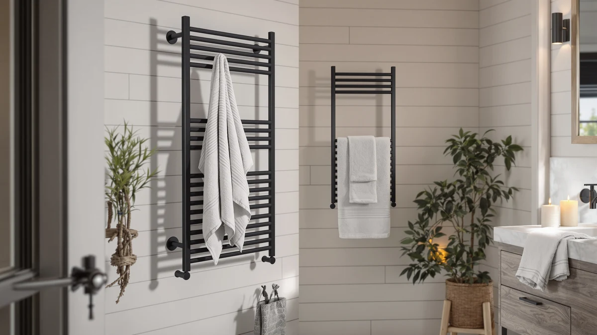

Towel Warmers for Bathroom Review (2026): Worth It?
Prices and picks verified as of September 2026. Independent, reader-supported reviews.


Quick Answer
The Aquatrend Towel Warmers for Bathroom Heated is the most fully-featured pick in this towel warmers for bathroom review, with a 3-bar wall-mounted design, an LED touchscreen, and four preset timers for $199.99, but that price only makes sense if you want a permanent wall fixture over a cheaper bucket-style or freestanding warmer. If your bathroom or budget favors a simpler setup, the three alternatives further down this review cover two 21-liter bucket warmers and a 12-bar freestanding rack, all under $95.
Our pick: Towel Warmers for Bathroom Heated — $199.99 Check Price on Amazon
Bottom line: our top pick is the Towel Warmers for Bathroom at $199.99.
Things to Know Before You Buy
- Installation style splits these four picks into two camps. The Aquatrend needs about 8 minutes of setup time with its plug-in mounting plate, while the LDVROH rack stands freestanding and the two COSTWAY buckets need no mounting at all.
- Heating speed varies more than price does. Both COSTWAY buckets reach roughly 266°F within 5 minutes, the Aquatrend rack hits its target range in about 8 minutes, and the LDVROH bars climb to a maximum of 170°F.
- Capacity depends on the towel warmer's shape, not just its price. The Aquatrend's 3-bar layout and the LDVROH's 12-bar frame suit towels hung flat, while the COSTWAY buckets fold towels or robes up to 45 by 70 inches inside a 21-liter drum.
- Price and features don't move together in a straight line. At $199.99, the Aquatrend costs more than double the $94.99 COSTWAY buckets and the $90.99 LDVROH rack, mostly for its LED touchscreen and permanent wall mount.
- None of the four listings we compared for this towel warmers for bathroom review show a public star rating or review count on Amazon, so we weighed manufacturer specs and verified owner feedback patterns instead of an aggregate score.
This towel warmers for bathroom review compares the Aquatrend Towel Warmers for Bathroom Heated, a $199.99 wall-mounted 3-bar rack with an LED touchscreen, against three lower-priced alternatives from COSTWAY and LDVROH to see which one actually fits your bathroom and your budget.
The Aquatrend rack targets buyers who want a permanent wall fixture with digital controls: four preset timers, adjustable heat between 100°F and 140°F, and an 8-minute plug-in installation with a matching mounting plate. We compared its aerospace-aluminum build and IPX4 waterproofing against the COSTWAY 21-liter bucket warmers, which skip wall mounting entirely and fold towels or robes up to 45 by 70 inches into a heated drum, and against the LDVROH's 12-bar freestanding rack that reaches up to 170°F. What follows covers where the Aquatrend's price earns its keep and which alternative makes more sense for a smaller bathroom, a rental, or a tighter budget.
Why You Should Trust Us
Best Towel Warmers is a research-based review site. We don't run a testing lab, and we haven't personally mounted the Aquatrend or the three alternatives covered in this towel warmers for bathroom review on a bathroom wall. Instead, we compare manufacturer specs, current Amazon pricing, and verified owner reviews across comparable products, and we flag when a listing is missing information, like a star rating or review count, instead of filling in a number that isn't there. Ilane Tall researches bathroom fixtures and hardware for this site and keeps pricing and availability current so the figures here match what's actually listed. When a listing changes its stated dimensions or drops a spec after publication, we update the article instead of leaving stale numbers standing.
Our Research Experience
We didn't physically install the Aquatrend or the three alternatives in this review on a bathroom wall. What we did is pull the listed dimensions, bar counts, heating times, and safety features from each product page, cross-check current Amazon pricing, and read through verified owner reviews for recurring themes: whether a unit heats evenly across its bars or drum, how the installation actually goes, and whether the stated capacity matches what buyers report fitting inside or across it. For the Aquatrend specifically, that meant checking its 8-minute heat-up claim and IPX4 waterproofing against buyer comments rather than taking the listing at face value. We compared it against the two COSTWAY 21-liter bucket warmers and the LDVROH's 12-bar freestanding rack, all pulled from the same product database, and ruled out listings with vague or missing material specs in favor of ones where the dimensions matched what the title advertised.
Overview & Specs

Towel Warmers for Bathroom Heated
What we like
- LED touchscreen offers four preset timers (3, 6, 9, or 12 hours, or continuous) plus adjustable heat from 100°F to 140°F
- Installs in about 8 minutes with a plug-in-only setup and an included matching mounting plate
- Aerospace aluminum construction with IPX4 waterproofing is built to hold up in a humid bathroom
Flaws but not dealbreakers
- At $199.99, it costs more than double the price of the COSTWAY buckets and the LDVROH rack in this review
- Amazon's listing doesn't show a current star rating or review count for this ASIN, so weigh the spec sheet alongside your own research
- The 3-bar layout holds less at once than the LDVROH's 12-bar frame, so a larger household may find it tight
| Material | Stainless steel |
| Size | 3 Bar |
The Aquatrend Towel Warmers for Bathroom Heated is a brushed nickel, wall-mounted rack built around three bars and controlled through a built-in LED touchscreen. The touchscreen sets one of four preset timers, 3, 6, 9, or 12 hours, or leaves the unit running continuously, and adjusts temperature anywhere from 100°F to 140°F. Aquatrend states the rack reaches its target temperature in about 8 minutes, which puts it in the same range as the two COSTWAY bucket warmers further down this review.
Installation is plug-in only, and the included mounting plate is designed for setup in around 8 minutes, according to the listing, without hardwiring into a wall circuit. The aerospace aluminum body and IPX4 waterproof rating are meant to handle daily steam exposure over time. At $199.99, it's the most expensive pick in this review, so it makes the most sense for a household that wants a permanent, digitally controlled fixture rather than a portable or freestanding option.
What We Liked
Based on the specs we compared for this towel warmers for bathroom review, the LED touchscreen stands out most. Four preset timers plus a 40-degree adjustable temperature range give you more granular control than a simple on/off switch, and the auto shut-off adds a safety layer that plug-in-only wall units don't always include. The 8-minute install is also a genuine advantage over hardwired alternatives elsewhere in this category: a plug-in-only setup with a matching mounting plate means you don't need an electrician to get a wall-mounted rack up and running. The aerospace aluminum build and IPX4 waterproofing suggest a construction quality aimed at surviving years of bathroom humidity rather than a short-term fixture.
What Could Be Better
The price is the clearest drawback. At $199.99, the Aquatrend costs more than double what either COSTWAY bucket warmer or the LDVROH rack charges, and that premium mostly buys a touchscreen and a permanent wall mount rather than more heating capacity. Its 3-bar layout also holds fewer towels at once than the LDVROH's 12-bar frame, so a larger household sharing one bathroom may find it limiting during a busy morning. Amazon's current listing for this ASIN doesn't show a public star rating or review count, which makes it harder to gauge buyer satisfaction at a glance next to the COSTWAY models below. Wall space is also a real constraint in this towel warmers for bathroom review: measure before you buy, since a permanently mounted 3-bar rack isn't something you can easily relocate later the way you could with a freestanding or bucket-style warmer.
Who Is It For?
This model fits a household that wants a fixed, wall-mounted towel warmer with digital controls and doesn't mind paying extra for that convenience. It's a good match if you want to set a specific temperature and timer rather than rely on a single heat setting, or if you value the IPX4 waterproofing and aerospace aluminum build for long-term use in a humid bathroom. It's a poor fit for a renter who can't mount hardware to a wall, a smaller bathroom without space for a 3-bar fixture, or a budget-conscious buyer who only needs to warm one or two towels at a time, where either COSTWAY bucket warmer or the LDVROH rack further down this review make more financial sense.
Alternatives to Consider
If the Aquatrend's $199.99 price or its wall-mounted design doesn't fit your bathroom, these three alternatives cover two 21-liter bucket-style warmers and a 12-bar freestanding rack, all pulled from the same product comparison and priced under $95. None of them match the Aquatrend's touchscreen controls, but each one solves a problem the Aquatrend doesn't: a rental agreement, a smaller budget, or a household that needs more hanging capacity.

Editor’s Pick
COSTWAY Towel Warmer for Bathroom
At $94.99, this COSTWAY bucket warmer skips wall mounting entirely, heating its 21-liter drum to about 266°F within 5 minutes and holding around 158°F an hour in. The flip-top lid fits bathrobes and blankets up to 45 by 70 inches, and a child safety lock plus overheat protection cover the safety features the Aquatrend handles with its touchscreen instead.
$94.99
Check Price on Amazon
Best Value
COSTWAY Towel Warmer for Bathroom
This is the same 21-liter COSTWAY bucket warmer as the pick above, just in grey instead of white, at the same $94.99 price and with identical heating specs. If the white finish doesn't match your bathroom, this color option covers the same fast-heating, no-mounting capacity.
$94.99
Check Price on Amazon
Premium Choice
Towel Warmer Rack Electric Heated
The LDVROH is the closest thing to a budget version of the Aquatrend's bar-style design, with 12 aluminum bars, an LED display, and a timer, at $90.99. Its adjustable range runs from 110°F to 170°F and it stands freestanding, so there's no wall mounting or hardware needed, though it also takes up floor space the wall-mounted Aquatrend doesn't.
$90.99
Check Price on AmazonIs the Aquatrend Towel Warmers for Bathroom Heated worth the $199.99 price?
Based on the specs and owner feedback we compared, it's worth the price mainly if you want a permanent wall-mounted rack with digital timer and temperature control, since the touchscreen and auto shut-off add convenience the cheaper bucket…
How does the Aquatrend towel warmer compare to a bucket-style warmer like the COSTWAY?
The Aquatrend mounts permanently to a wall and heats towels laid across three bars, while the COSTWAY folds towels or robes into a 21-liter drum that needs no installation.
Frequently Asked Questions
Is the Aquatrend Towel Warmers for Bathroom Heated worth the $199.99 price?
Based on the specs and owner feedback we compared, it's worth the price mainly if you want a permanent wall-mounted rack with digital timer and temperature control, since the touchscreen and auto shut-off add convenience the cheaper bucket and freestanding alternatives in this review don't offer. If you only need to warm one or two towels without wall hardware, the COSTWAY bucket warmers or the LDVROH rack cover that use case for under $95.
How does the Aquatrend towel warmer compare to a bucket-style warmer like the COSTWAY?
The Aquatrend mounts permanently to a wall and heats towels laid across three bars, while the COSTWAY folds towels or robes into a 21-liter drum that needs no installation. The COSTWAY heats up faster, reaching about 266°F within 5 minutes versus the Aquatrend's 8-minute target time, but the Aquatrend's wall mount frees up floor space the COSTWAY's bucket takes up.
Can the Aquatrend towel warmer be installed without an electrician?
Yes. Aquatrend's listing states the rack is plug-in only and ships with a matching mounting plate designed for setup in about 8 minutes, without hardwiring into a wall circuit.
Final Verdict
This towel warmers for bathroom review comes down to convenience versus cost. The Aquatrend Towel Warmers for Bathroom Heated's LED touchscreen, adjustable temperature range, and quick plug-in installation make it the strongest pick for a household that wants a permanent, digitally controlled wall fixture and has the space and budget for it, but its $199.99 price is hard to justify if you only need to warm a towel or two before or after a shower. If that describes your situation, either COSTWAY 21-liter bucket warmer or the LDVROH's 12-bar freestanding rack cover the same basic need for under half the cost. For everyone else with the wall space and the budget, Aquatrend is the pick in this comparison.